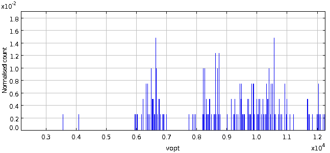
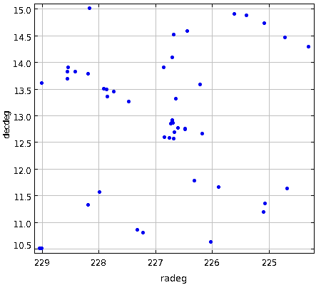
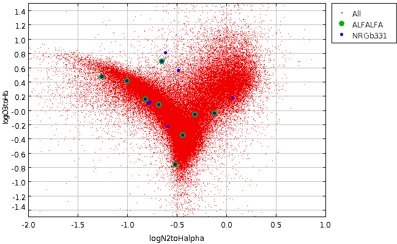

NRGb054
RA,Dec RA,Dec(deg) R(2Mpc) nz nopt cz sig logsig sig logLx dist*
NRGb331 1506414+124413 226.6725 12.73695 1.2 8 31 6904 69 2.31 0.08 <42.20 0.00 101
At this distance, 2 Mpc = 1.2 degrees. The cluster is not detected in x-ray observations, and so its center is uncertain.
We will start by examining a larger, 4 Mpc wide section of the sky:
So box should be: RA > 224.27 & RA < 129.07
Dec > 10.34 & Dec < 15.14
(This selects N = 407 galaxies)
Using agcnorthminus1.csv within that region, a histogram of velocities shows that the cluster is reasonably separated in velocity space:

We'll select everything from 5500 to 7500 km/s. (this selects N = 47 galaxies)
Looking at the spatial distribution, we can see that the literature position is good, and well-centered on what I would by eye choose to be the center
(with a cursor, I select RA=226.72, dec=12.76 degrees)

Now, we'll restrict to a 2 Mpc box---which includes not only the group but also some of the environment. The volume selection is:
So box should be: RA > 225.47 & RA < 227.87
Dec > 11.54 & Dec < 13.94
vel > 5500 & vel < 7500
Using a57+agc+nsa.v012.mags+lines.appmags+faceHalpha.csv, the RA/Dec/Velocity slice
selects N = 9 galaxies, all code 1s and 2s.
+--------+-----------+----------+--------+-----+-------+------+-------+
| AGCnr | radeg_1 | decdeg_1 | v21_1 | W50 | sintp | sn | icode |
+--------+-----------+----------+--------+-----+-------+------+-------+
| 258107 | 225.89626 | 11.6475 | 6894.0 | 55 | 1.73 | 23.4 | 1 |
| 257872 | 226.21959 | 13.56944 | 6194.0 | 34 | 0.51 | 8.7 | 1 |
| 258111 | 226.32458 | 11.76694 | 6587.0 | 146 | 1.11 | 8.9 | 1 |
| 250059 | 226.48373 | 12.72806 | 6396.0 | 129 | 0.53 | 4.6 | 2 |
| 250079 | 226.67459 | 12.67611 | 6661.0 | 206 | 3.74 | 25.1 | 1 |
| 257875 | 226.71333 | 12.91139 | 6499.0 | 208 | 2.16 | 13.6 | 1 |
| 9714 | 226.72209 | 12.85861 | 6500.0 | 351 | 4.21 | 19.1 | 1 |
| 257876 | 226.85625 | 13.88917 | 6053.0 | 171 | 1.79 | 9.2 | 1 |
| 250161 | 227.47041 | 13.25611 | 6710.0 | 72 | 3.1 | 38.3 | 1 |
+--------+-----------+----------+--------+-----+-------+------+-------+
Using agc+nsa.v012.mags+lines.appmags+faceHalpha.csv, the RA/Dec/Velocity slice
selects N = 15 galaxies:
+--------+-----------+----------+--------+------------+---------------------+-------------------+----------------------+-----------------------+
| AGCnr | radeg | decdeg | NSAID | ABSMAG_i | g-i | vhelio | logN2toHalpha | logO3toHb |
+--------+-----------+----------+--------+------------+---------------------+-------------------+----------------------+-----------------------+
| 258107 | 225.89626 | 11.6475 | 72272 | -18.394974 | 0.5499580000000002 | 6894.794492448 | -0.6851811819215653 | 0.06961620557146782 | ** ALFALFA
| 251599 | 226.18333 | 12.65083 | 120913 | -17.923708 | 0.46220200000000133 | 6635.46421952 | -0.5893642436460973 | -0.23836258863740675 |
| 257872 | 226.21959 | 13.56944 | 120985 | -17.554203 | 0.12947300000000084 | 6198.50538784 | -1.2563830444911084 | 0.4712044490832906 | ** ALFALFA
| 258111 | 226.32458 | 11.76694 | 72444 | -17.441587 | 0.5629149999999967 | 6586.453024192 | -1.0047812355923458 | 0.4057156034949545 | ** ALFALFA
| 250057 | 226.47833 | 12.74444 | 120916 | -20.3375 | 1.0597199999999987 | 6641.14527792 | -0.4874813354933733 | 0.5538435157918317 |
| 250059 | 226.48373 | 12.72806 | 120909 | -20.302631 | 1.0854280000000003 | 6303.184959648001 | -0.6512614725834002 | 0.6832638227090351 | ** ALFALFA
| 736557 | 226.60335 | 12.75667 | 120905 | -17.439941 | 0.8202660000000002 | 6484.47397872 | -0.765763142402325 | 0.11140041727208472 |
| 250079 | 226.67459 | 12.67611 | 120902 | -20.407648 | 0.681044 | 6644.525132928 | -0.5123674586077053 | -0.7664381146538523 | ** ALFALFA
| 257875 | 226.71333 | 12.91139 | 120911 | -18.095392 | 0.5768470000000008 | 6536.362577664 | -0.8190528459991249 | 0.1458340932952423 | ** ALFALFA
| 9714 | 226.72209 | 12.85861 | 120910 | -20.773739 | 1.0202729999999995 | 6467.589093696 | -0.12204588555902528 | -0.04930862344366008 | ** ALFALFA
| 250084 | 226.73459 | 12.84667 | 120904 | -21.790638 | 1.221815000000003 | 6677.618572224 | 0.06546724640606269 | 0.1688049199040349 |
| 736571 | 226.75584 | 12.57194 | 121020 | -17.20613 | 0.4134170000000026 | 6763.758407168 | -0.7894317765803089 | 0.09318811183740924 |
| 257876 | 226.85625 | 13.88917 | 120997 | -18.122816 | 0.6425230000000006 | 6041.82959176 | -0.31949924694616266 | -0.061872890924471936 | ** ALFALFA
| 250161 | 227.47041 | 13.25611 | 165959 | -20.06346 | 0.7827419999999989 | 6707.822616224 | -0.43904212130059095 | -0.3557506879344182 | ** ALFALFA
| 736630 | 227.7375 | 13.44611 | 121030 | -16.88942 | 0.883229 | 6745.947464656 | -0.6171667218397269 | 0.8055515589093338 |
+--------+-----------+----------+--------+------------+---------------------+-------------------+----------------------+-----------------------+
A BPT diagram of the cluster:

Selecting just the ones from the star-forming sequence without HI gives a sample of just N = 3 galaxies:
+--------+-----------+----------+--------+------------+---------------------+----------------+----------------------+----------------------+
| AGCnr | radeg | decdeg | NSAID | ABSMAG_i | g-i | vhelio | logN2toHalpha | logO3toHb |
+--------+-----------+----------+--------+------------+---------------------+----------------+----------------------+----------------------+
| 251599 | 226.18333 | 12.65083 | 120913 | -17.923708 | 0.46220200000000133 | 6635.46421952 | -0.5893642436460973 | -0.23836258863740675 |
| 736557 | 226.60335 | 12.75667 | 120905 | -17.439941 | 0.8202660000000002 | 6484.47397872 | -0.765763142402325 | 0.11140041727208472 |
| 736571 | 226.75584 | 12.57194 | 121020 | -17.20613 | 0.4134170000000026 | 6763.758407168 | -0.7894317765803089 | 0.09318811183740924 |
+--------+-----------+----------+--------+------------+---------------------+----------------+----------------------+----------------------+